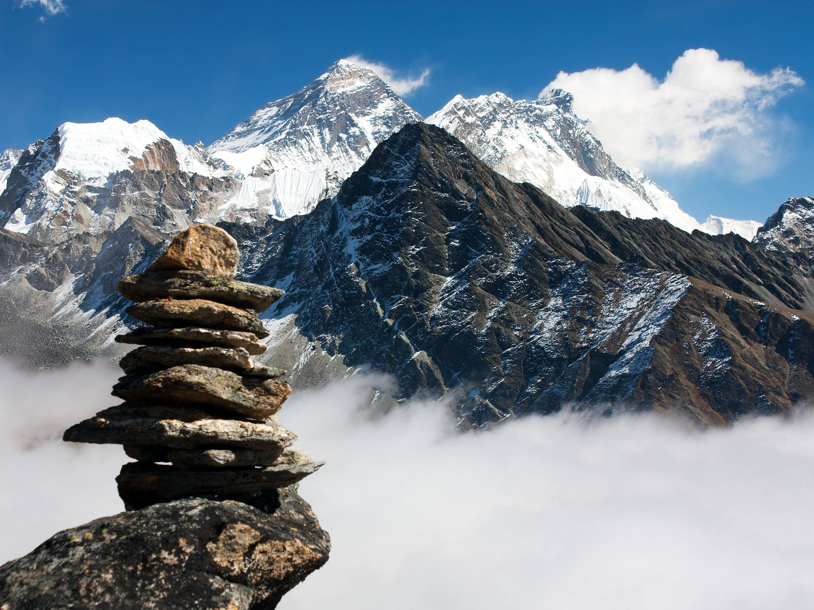

Best seller

Everest Base Camp
Fly into Lukla and follow the Dudh Koshi through Namche Bazaar, Tengboche and Dingboche to the Khumbu Icefall at 5,364 m. Sunrise from Kala Patthar is the finish.
$1,450 / person
Book This Trek